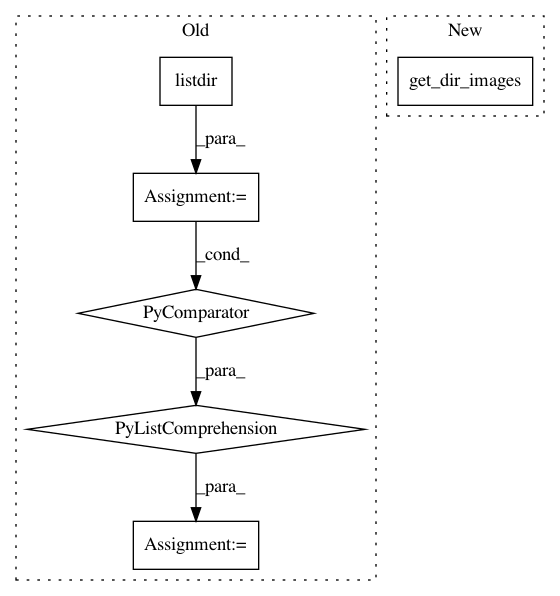

c303b9dbcf79d067c688dbe9c0fb5b77076e920c,deepplantphenomics/object_detection_model.py,ObjectDetectionModel,load_yolo_dataset_from_directory,#ObjectDetectionModel#Any#Any#Any#,790
Before Change
// Hack to make the label reader convert the labels to YOLO format when re-reading image patches
self._with_patching = False
self.load_json_labels_from_file(label_path)
images_list = [image_path + filename for filename in sorted(os.listdir(image_path))
if filename.endswith(".png")]
self.load_images_from_list(images_list)
if load_patched_data:
// Remove the hack
self._with_patching = True
After Change
image_path = os.path.join(data_dir, image_dir, "")
self.load_json_labels_from_file(label_path)
images_list = loaders.get_dir_images(image_path)
self.load_images_from_list(images_list)
// Perform automatic image patching if necessary
if self._with_patching:
In pattern: SUPERPATTERN
Frequency: 3
Non-data size: 6
Instances
Project Name: p2irc/deepplantphenomics
Commit Name: c303b9dbcf79d067c688dbe9c0fb5b77076e920c
Time: 2019-10-15
Author: dbl599@mail.usask.ca
File Name: deepplantphenomics/object_detection_model.py
Class Name: ObjectDetectionModel
Method Name: load_yolo_dataset_from_directory
Project Name: p2irc/deepplantphenomics
Commit Name: ee63af01e28b1ac2b31eda1a28aa72920bc9dd6a
Time: 2019-10-08
Author: dbl599@mail.usask.ca
File Name: deepplantphenomics/semantic_segmentation_model.py
Class Name: SemanticSegmentationModel
Method Name: load_dataset_from_directory_with_segmentation_masks
Project Name: p2irc/deepplantphenomics
Commit Name: 2c34a47f683dedb310f1c92be66870163cf80302
Time: 2019-10-10
Author: dbl599@mail.usask.ca
File Name: deepplantphenomics/heatmap_object_counting_model.py
Class Name: HeatmapObjectCountingModel
Method Name: load_heatmap_dataset_with_csv_from_directory